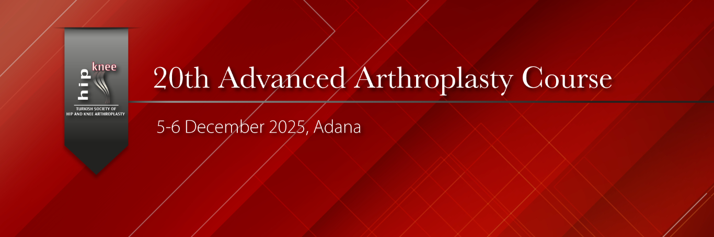

Dear Colleagues,
As the Hip and Knee Arthroplasty Association, we will be organizing the 20th Advanced Arthroplasty Course on December 5–6, 2025 at Acıbadem Adana Orthopedia Hospital. During our two-day meeting, where we will discuss the topic of “Hip Arthroplasty” at an advanced level, we will have the opportunity to explore primary total hip arthroplasty, complex hip arthroplasty, and revision hip arthroplasty in comprehensive detail through theoretical lectures, live surgeries, and interactive discussions.
Our aim is to provide participants—who have already completed basic hip arthroplasty training—the opportunity to review and discuss important details regarding preoperative preparation, intraoperative decision-making, and postoperative management, and to evaluate potential solutions together.
Robotic primary direct anterior total hip arthroplasty, complex difficult hip arthroplasty, and revision hip arthroplasty procedures will be broadcast live from the operating room, allowing participants to ask questions interactively and engage in in-depth discussions.
We would be delighted to welcome you among us at the 20th Advanced Arthroplasty Course.
Prof. Dr. İbrahim Tuncay
President of KADAD
Prof. Dr. Bülent Özkurt
Course Director
Op. Dr. Remzi Çaylak
Course Secretary

Resim Galerisi